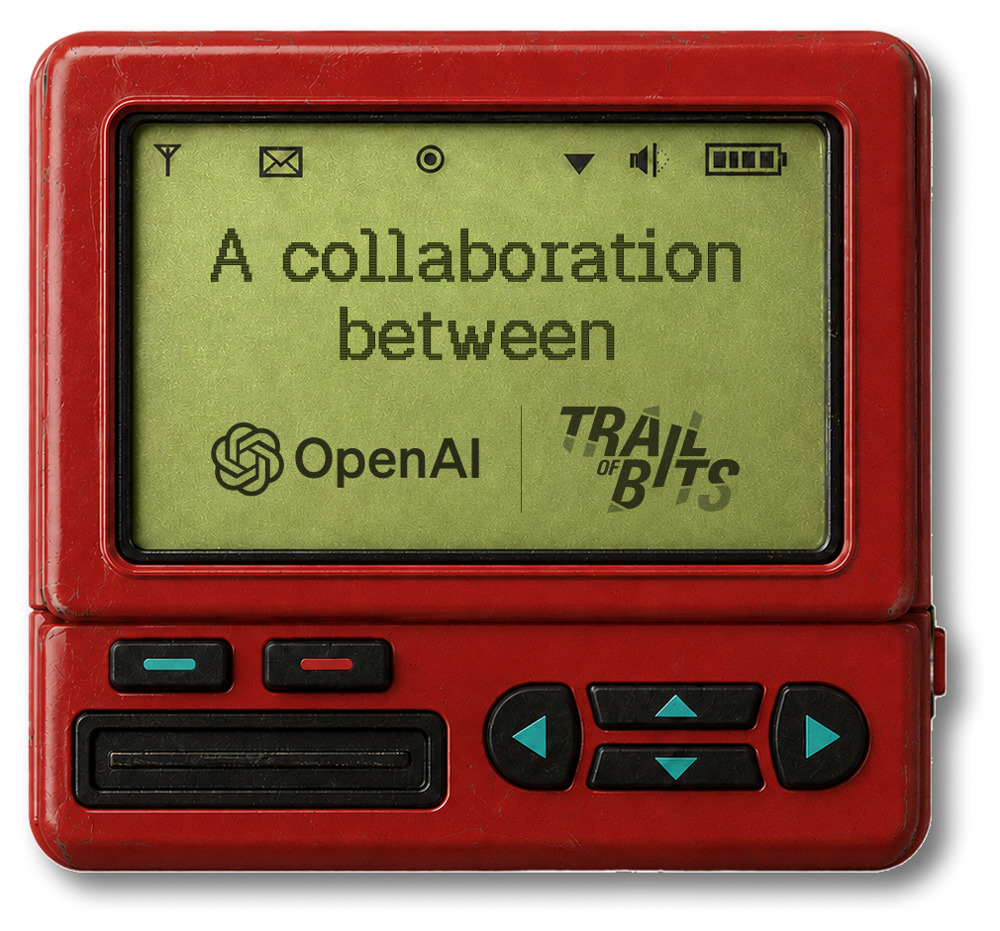

AI 단신 HELLO, HUMAN! / BRIEF 10
OpenAI ‘Patch the Planet’,
취약점 수정부터 배포까지
공동 대응 제안
취약점을 찾아도, 고칠 사람이 부족하면 문제는 남습니다. 오픈소스 개발팀에 보안 전문가와 AI 도구를 함께 지원하는 프로그램, PHP 대응에서 무엇을 배웠을까요?

OpenAI가 10월 21일, 오픈소스 보안 지원 프로그램 Patch the Planet의 PHP 취약점 대응 사례를 공개했습니다. 이를 바탕으로 취약점 검증부터 공개·패치 배포까지 여러 조직이 함께 준비하는 절차도 제안했습니다. OpenAI 발표 ↗
Patch the Planet은 무엇을 돕나요?
AI와 보안 전문가가 핵심 오픈소스의 유지관리자를 도와 취약점을 찾고, 검증하고, 수정하는 프로그램입니다. OpenAI가 보안업체 Trail of Bits와 함께 만들었으며, 사이버보안 활동인 Daybreak에 속합니다. 프로그램은 올해 6월 22일 출범했고, 초기 참여 프로젝트에는 cURL, Python, Go, Sigstore 등이 포함됐습니다. 출범 당시 소개 ↗
출발점은 유지관리자의 업무 부담입니다. AI가 취약점 후보를 많이 찾아도, 담당자는 실제 결함인지 재현하고 중복 보고나 잘못된 판단을 걸러야 합니다. 수정할 때는 기존 기능이 망가지지 않는지도 확인해야 합니다. 이 프로그램은 보고서를 검토하고 패치와 테스트를 만드는 실무를 함께 지원합니다.
| 지원 분야 | 함께 하는 일 |
|---|---|
| 취약점 검증 | 문제를 재현하고 중복·오탐을 걸러 심각도를 판단합니다. |
| 패치와 테스트 | 수정안을 만들고 시험하며, 프로젝트의 절차에 맞춰 공개를 준비합니다. |
| 지속적인 보안 개선 | 반복해서 쓸 테스트와 자동 점검, 개발·배포 과정을 개선합니다. |
조사는 유지관리자와 필요한 지원 범위를 정하는 데서 시작합니다. Trail of Bits의 현재 모집 안내에는 선정된 프로젝트에 전담 엔지니어의 일주일간 검토·패치 지원, 선정된 유지관리자에게 ChatGPT Pro 6개월 이용과 조건부 Codex Security 접근을 제공한다고 나와 있습니다. 모든 신청자에게 자동으로 주어지는 혜택은 아닙니다. 프로그램 안내·참여 신청 ↗
PHP 대응이 보여준 수정의 어려움
PHP는 웹사이트와 웹 애플리케이션을 구동하는 데 쓰이는 프로그래밍 언어입니다. 이번에 공개된 두 취약점은 조건이 맞으면 로그인 같은 인증 없이 서버에서 공격자의 코드를 실행할 수 있는 문제였습니다. PHP 프로젝트는 10월 21일 보안 업데이트를 배포했습니다. PHP 공식 보안 공지 ↗
OpenAI에 따르면 Calif는 GPT‑5.6 Sol을 활용했고, Wiz도 두 취약점을 독립적으로 발견·보고했습니다. OpenAI와 파트너들이 연구와 대응 조율을 도왔으며, 수정과 릴리스는 PHP 유지관리자들이 주도했습니다.
AI에게 모든 공을 돌리기 어려운 이유도 있습니다. Calif 연구자는 과거 PHP 취약점에 관한 지식과 자신의 가설로 조사 방향을 정했다고 설명했습니다. 초기 발견에 특별한 실행 환경이나 비공개 모델을 쓰지 않았다는 설명도 덧붙였습니다. Calif의 연구 경위 ↗
PHP 재단은 두 문제 중 메모리 부족 처리와 관련된 한 취약점의 초기 징후를 2024년에도 파악했다고 밝혔습니다. 당시에는 구체적인 공격 경로를 찾지 못했고, 수정에 따른 호환성 문제와 부족한 인력, 의사결정 구조 때문에 작업이 지연됐습니다. 이번 연구에서는 실제 공격 경로가 입증됐습니다. 문제를 아는 것과 고칠 수 있는 것은 별개의 과제였던 셈입니다. PHP 재단의 설명 ↗
이번 수정 버전은 PHP 8.2.35 · 8.3.36 · 8.4.27 · 8.5.12입니다. 배포업체가 기존 버전에 보안 수정을 반영했을 수도 있으므로 공급업체 공지도 함께 확인해야 합니다. PHP는 임시 완화책만으로 두 취약점을 완전히 해결할 수 없다고 안내합니다.
코드를 고친 뒤에는 배포 공조가 필요합니다
널리 쓰이는 소프트웨어는 개발팀이 수정해도 여러 제품과 서비스에 반영되기까지 시간이 걸립니다. OpenAI는 PHP 대응 경험을 토대로 다음 다섯 단계를 제안했습니다.
- 검증·수정취약점을 확인하고 패치를 개발·시험합니다.
- 사전 준비배포업체·호스팅사·보안업체가 업데이트와 방어책을 준비합니다.
- 중요 시스템 보호정부 기관과 협력해 핵심 인프라와 필수 서비스에 지침을 전달합니다.
- 업데이트 준비 확대참여 대상을 넓혀 관련 제품과 서비스의 배포 준비를 맞춥니다.
- 공개·적용 지원지침을 공개하고, 운영자의 업데이트와 적용 확인을 돕습니다.
사전 정보를 받을 대상은 유지관리자가 결정합니다. 공격이나 정보 유출로 위험이 커지면 공개 일정도 재검토하도록 했습니다. 공동 대응 제안 ↗
공개 준비가 곧 안전을 보장하는 것은 아닙니다. AWS는 공개보다 나흘 앞선 10월 17일자 허니팟, 즉 공격 탐지용 가짜 시스템의 기록에서 악용 시도를 확인했다고 밝혔습니다. 다만 관측한 시도들이 실제 운영 시스템에서 성공했을지는 불명이라고 설명했습니다. 공격자가 공개 전에 정보를 얻은 경위도 밝혀지지 않았습니다. AWS의 관측 보고 ↗
원문과 확인 자료
OPENAI · 2026. 10. 21 · 한국어 원문 Patch the Planet, 심각한 취약점에 대한 전 세계적 대응 조율 원문 읽기- OpenAI · 프로그램 출범과 지원 범위 · 2026. 06. 22
- Trail of Bits · 프로그램 안내와 모집 조건 · 2026. 10. 22 확인
- PHP · 두 취약점과 수정 버전, 업데이트 안내 · 2026. 10. 21
- PHP 재단 · 2024년부터 이어진 문제와 수정 지연의 배경 · 2026. 10. 21
- Calif · PHP2Shell 연구와 연구자의 역할
- AWS · 공개 전 악용 시도 관측과 확인 한계 · 2026. 10. 21
2026년 10월 22일(한국시간), 위 공식 발표와 연구 원문을 대조했습니다. 사건·발표 날짜는 각 원문 표기를 따랐습니다. 취약점 공격과 패치 효과를 직접 재현하지 않았습니다. ‘헬로우 휴먼의 시선’은 자료를 바탕으로 우리 업무에 적용해본 생각입니다.
AI뉴스 목록으로 돌아가기